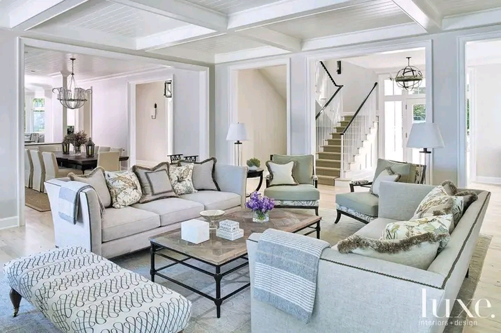

🏡Portefollio
Ici je vous présente les deux choses qui me passionne le plus à part le développement web!!!
La télemédécine une passion pour moi depuis l'enfance raison pour laquelle jai embrassé le domaine informatique ..aufaites la santé un truc important pour l'humain ne doit pas etre pris à la legère ainsi je suis conscient que pour perçer dans la télémédécine je dois avoir des connaissances en médécines ce que j'envisage pour la suite de mes études.
L'immobilier numérique , une passion pour moi ...en effet le monde de l'immobilier est extraordinaire et pour y accéder il faut des connaissances en immobilier puis du fric ..car l'argent dans le monde immobilier c'est l'important .......